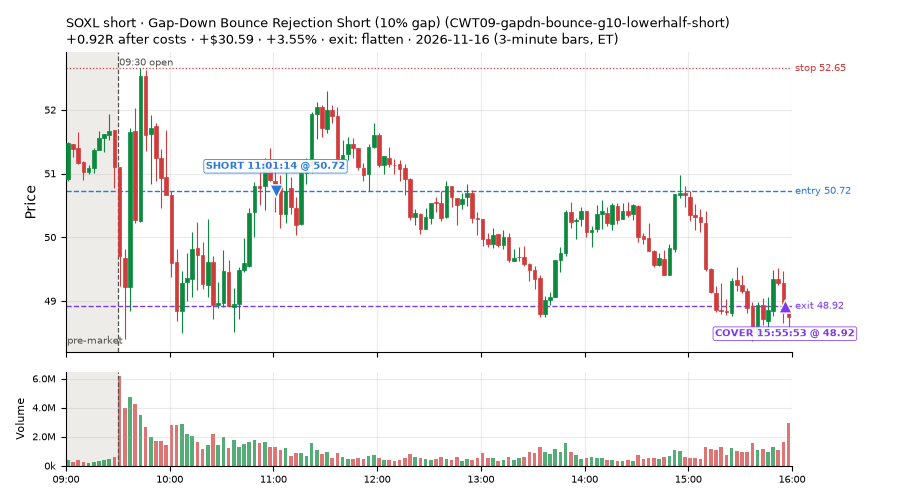
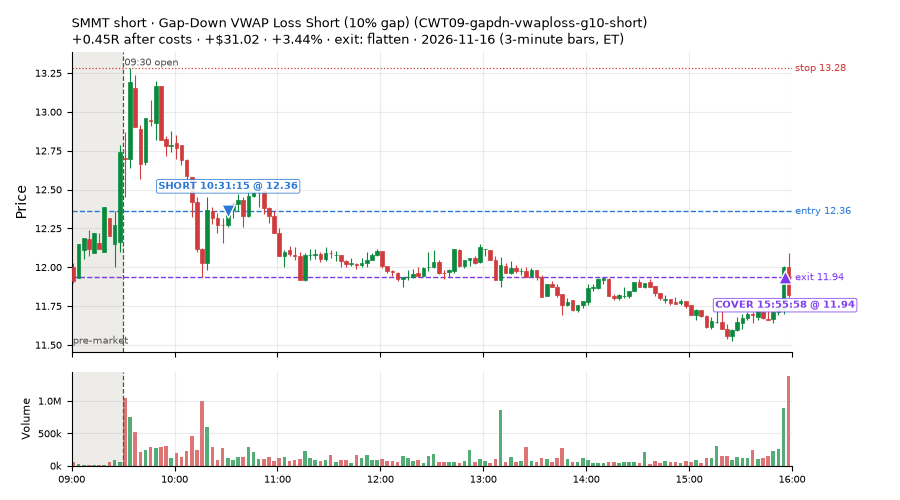
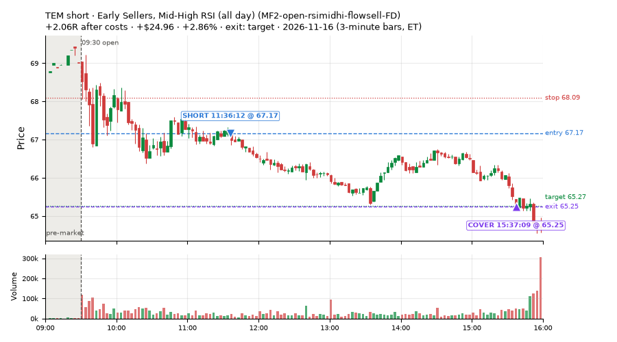
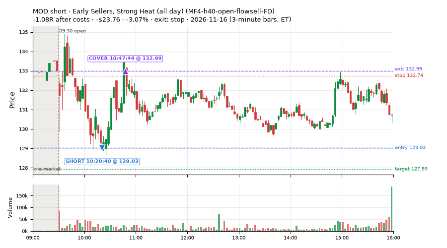
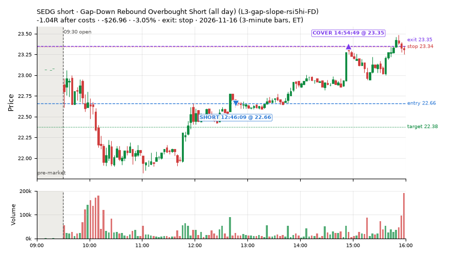
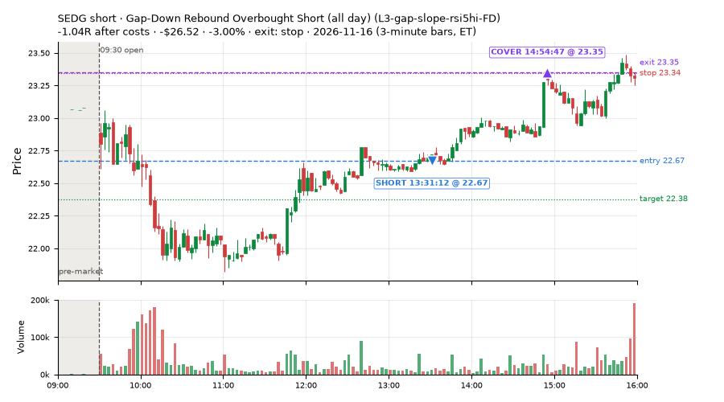
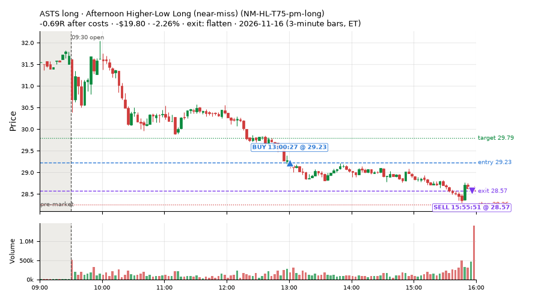
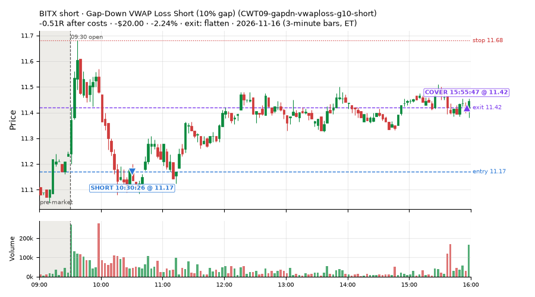

67 trades · win rate 60% · P/L $123.55
PROBATION: no live setup has passed both locked test periods. 10 owner-directed setups added 2026-10-08 (MarcoFlow top 5 + 5 new), untested live. RW6G1 (RW6 + VWAP band guard) added 2026-10-09, probation.

| Symbol | Setup | Side | In | Out | Entry | Exit | Exit reason | % gained | P/L |
|---|---|---|---|---|---|---|---|---|---|
| SOXL | Gap-Down Bounce Rejection Short (10% gap) (CWT09-gapdn-bounce-g10-lowerhalf-short) | short | 11:01 | 15:55 | 50.72 | 48.92 | flatten | +3.55% | $30.59 |
| SMMT | Gap-Down VWAP Loss Short (10% gap) (CWT09-gapdn-vwaploss-g10-short) | short | 10:31 | 15:55 | 12.36 | 11.94 | flatten | +3.44% | $31.02 |
| TEM | Early Sellers, Mid-High RSI (all day) (MF2-open-rsimidhi-flowsell-FD) | short | 11:36 | 15:37 | 67.17 | 65.25 | target | +2.86% | $24.96 |
| Symbol | Setup | Side | In | Out | Entry | Exit | Exit reason | % lost | P/L |
|---|---|---|---|---|---|---|---|---|---|
| MOD | MF4-h40-open-flowsell-FD | short | 10:20 | 10:47 | 129.03 | 132.99 | stop | -3.07% | $-23.76 |
| SEDG | L3-gap-slope-rsi5hi-FD | short | 12:46 | 14:54 | 22.66 | 23.35 | stop | -3.05% | $-26.96 |
| SEDG | L3-gap-slope-rsi5hi-FD | short | 13:31 | 14:54 | 22.67 | 23.35 | stop | -3.00% | $-26.52 |
| ASTS | NM-HL-T75-pm-long | long | 13:00 | 15:55 | 29.23 | 28.57 | flatten | -2.26% | $-19.80 |
| BITX | CWT09-gapdn-vwaploss-g10-short | short | 10:30 | 15:55 | 11.17 | 11.42 | flatten | -2.24% | $-20.00 |








Signal to fill: median 2s, 90th percentile 4s (67 trades). Bars close each minute; the order follows the bar close.
Best excursion (MFE): median 0.47R; worst (MAE) median 0.40R. 27% of trades never got +0.25R in our favour; 2 reached +1R and still closed at or below 0.
| Symbol | Setup | Best R | Worst R | Closed R |
|---|---|---|---|---|
| EL | MF2-open-rsimidhi-flowsell-FD | +1.37 | -1.21 | -1.29 |
| CRCL | MF2-open-rsimidhi-flowsell-FD | +1.43 | -0.55 | -0.09 |
| PODD | CWT05-flush-m05-v5-long | +0.36 | -1.10 | -1.14 |
| MOD | MF4-h40-open-flowsell-FD | +0.10 | -1.19 | -1.08 |
| MOD | MF2-open-rsimidhi-flowsell-FD | -0.02 | -1.07 | -1.18 |
| Entry time | Trades | Win | Avg R | P/L |
|---|---|---|---|---|
| 09:50-10:30 | 7 | 43% | -0.13 | $-7.35 |
| 10:30-11:30 | 11 | 45% | -0.02 | $22.78 |
| 11:30-13:00 | 28 | 71% | +0.29 | $118.12 |
| 13:00-14:00 | 8 | 38% | -0.22 | $-35.66 |
| 14:00-16:00 | 13 | 69% | -0.03 | $25.66 |
| Setup | Trades | Win | Avg R after costs | Adj R (net of SPY) | Avg R ex-market (all sessions) | P/L |
|---|---|---|---|---|---|---|
| Panic Flush Reversal (5x volume) (CWT05-flush-m05-v5-long) | 1.0 | 0% | -1.14 | -0.78 | +0.05 (beta +1.53, n 5) | $-12.66 |
| Gap-Down Bounce Rejection Short (10% gap) (CWT09-gapdn-bounce-g10-lowerhalf-short) | 2.0 | 50% | +0.31 | +0.02 | – | $22.69 |
| Gap-Down VWAP Loss Short (10% gap) (CWT09-gapdn-vwaploss-g10-short) | 4.0 | 50% | -0.11 | -0.26 | -0.00 (beta +0.08, n 6) | $3.49 |
| Gap-Down Bounce-off-Low Fade (all day) (L3-gap-slope-lowdist-FD) | 1.0 | 100% | +0.75 | -0.01 | -0.08 (beta -1.45, n 106) | $7.47 |
| Gap-Down Rebound Overbought Short (all day) (L3-gap-slope-rsi5hi-FD) | 10.0 | 70% | +0.07 | -0.14 | +0.02 (beta -1.01, n 81) | $14.56 |
| Early Sellers, Mid-High RSI (all day) (MF2-open-rsimidhi-flowsell-FD) | 9.0 | 44% | -0.02 | -0.44 | -0.14 (beta -1.52, n 37) | $33.55 |
| Early Sellers into a Pop (MF3-open-flowsell-rsi5hi) owner-directed; holdouts once: Sep-Oct -0.059R n170, Apr-Jun -0.034R n729 | 3.0 | 33% | -0.02 | -0.42 | -0.09 (beta -0.58, n 37) | $6.36 |
| Early Sellers, Strong Heat (all day) (MF4-h40-open-flowsell-FD) | 7.0 | 57% | +0.01 | -0.39 | -0.05 (beta -1.15, n 51) | $-1.94 |
| Afternoon Higher-Low Long (near-miss) (NM-HL-T75-pm-long) | 6.0 | 67% | +0.17 | +0.15 | +0.24 (beta +1.27, n 6) | $-0.21 |
| Big Gainer Dip-and-Pop (NS1-rsidip-rsi5pop-long) owner-directed; holdouts once: Sep-Oct +0.326R n10, Apr-Jun +0.056R n119 | 3.0 | 33% | -0.28 | +0.18 | +0.29 (beta +0.32, n 7) | $-12.96 |
| Gap-Down Bounce Short, Heavy Selling (all day) (RW1-gapdn-bounce-flowsell-short-FD) | 19.0 | 74% | +0.23 | -0.12 | -0.19 (beta -0.92, n 79) | $67.55 |
| Gap-Up Faller Volume Spike Short (all day) (ST6-volspikeup-short-mid-t1s1-FD) | 1.0 | 100% | +0.30 | -0.45 | +0.03 (beta -0.94, n 29) | $2.55 |
| 20-Minute Opening Range Breakout (orb20_a) failed Apr-Jun holdout: -0.040R/trade over 421 trades | 1.0 | 0% | -0.44 | +0.17 | +0.07 (beta +0.23, n 34) | $-6.90 |
Market direction (SPY, beta 1) accounted for $209.73 of today's $123.55; the rest ($-86.18) came from the setups themselves. Avg R net of SPY: -0.18 (incl. a hedge leg's cost; report only).
13 setups live today. Today: 237 signals, 67 taken, 2 lost because another setup held the symbol (1%). Since 2026-10-09 (27 sessions): 10517 signals, 4164 taken, 767 lost to other setups (7%). Peak open positions today 45 of 400 slots. Earnings blackout removed 411 symbols before scanning.
Simulated playing time (not live): 6015 what-if trades of signals not taken, avg -0.14R, 48% winners; of them 614 lost to another setup (avg +0.02R).
Silent: IDX1-qqq100-0955-TQQQ-trail, IDX1-qqq100-0955-TQQQ-hold, IDX2-spy075-0945-3x-trail, IDX3-spy075-0955-3x-trail, IDX5-spy050-0945-3x-trail · Crowded out: MF3-open-flowsell-rsi5hi, RW4-ns3-adv150-short-FD, RW4-ns3-adv150-short, NS3-failed-vwap-reclaim-short-FD · Starved: orb20_a, MF1-945-flowsell-vwapup, RW6G1-ns2-up3-vwap2sd-short, LIQ-pdl-sweep-open15-vwap-long, MF5-flowsell-vwapup-rsi5hi, ST5-pdbrkup-short-mid-t05s1-FD, ST3-rsi5up-short-pm-t1s1-FD, exhaustion_short-FD, NS2-sma50break-overbought-short, MF1-945-flowsell-vwapup-FD
| Prio | Setup | Today sig / taken | Sessions | Signals / taken / trades | Taken/day | Expected/day | Lost to other setups | Lost to (setup n) | Top skip reasons | SIMULATED: not-taken n / avg R / win | Verdict |
|---|---|---|---|---|---|---|---|---|---|---|---|
| 1 | Gap-Up Faller Volume Spike Short (all day) ST6-volspikeup-short-mid-t1s1-FD | 1 / 1 | 21 | 56 / 29 / 29 | 1.38 | 1.24 | 4 | RW4-ns3-adv150-short-FD 3, NS3-failed-vwap-reclaim-short 3, NS3-failed-vwap-reclaim-short-FD 1 | split-tape short gate 13, not shortable / shorts off 6, symbol held by another setup 4 | 25 / -0.12R / 48% | slow 6.9 entries/week; ~9 weeks to 60 trades |
| 2 | Gap-Down Bounce Rejection Short (10% gap) CWT09-gapdn-bounce-g10-lowerhalf-short | 42 / 2 | 3 | 97 / 4 / 4 | 1.33 | – | 0 | – | not shortable / shorts off 88, other 3, spread / quote / size 2 | 92 / -0.56R / 28% | slow 6.7 entries/week; ~9 weeks to 60 trades |
| 3 | Panic Flush Reversal (5x volume) CWT05-flush-m05-v5-long | 1 / 1 | 3 | 8 / 5 / 5 | 1.67 | – | 1 | CWT09-gapdn-vwaploss-g10-short 1 | symbol held by another setup 1, spread / quote / size 1, other 1 | 3 / +0.55R / 100% | slow 8.3 entries/week; ~7 weeks to 60 trades |
| 4 | Gap-Down VWAP Loss Short (10% gap) CWT09-gapdn-vwaploss-g10-short | 51 / 4 | 3 | 93 / 6 / 6 | 2.00 | – | 0 | – | not shortable / shorts off 84, spread / quote / size 3 | 87 / -0.79R / 23% | slow 10.0 entries/week; ~6 weeks to 60 trades |
| 5 | Early Sellers into a Pop MF3-open-flowsell-rsi5hi | 8 / 3 | 21 | 151 / 37 / 37 | 1.76 | 9.19 | 38 | MF3-open-flowsell-rsi5hi-FD 35, MF5-flowsell-vwapup-rsi5hi 13, MF5-flowsell-vwapup-rsi5hi-FD 7 | symbol held by another setup 38, split-tape short gate 38, spread / quote / size 20 | 114 / -0.34R / 38% | crowded-out 38 of 151 signals (25%) lost to setups already holding the symbol |
| 6 | Afternoon Higher-Low Long (near-miss) NM-HL-T75-pm-long | 6 / 6 | 3 | 7 / 6 / 6 | 2.00 | – | 0 | – | spread / quote / size 1 | 1 / +0.45R / 100% | slow 10.0 entries/week; ~6 weeks to 60 trades |
| 7 | Big Gainer Dip-and-Pop NS1-rsidip-rsi5pop-long | 4 / 3 | 4 | 10 / 7 / 7 | 1.75 | 0.92 | 0 | – | spread / quote / size 2, price through stop/target 1 | 3 / +0.41R / 100% | slow 8.8 entries/week; ~7 weeks to 60 trades |
| 8 | Gap-Down Bounce-off-Low Fade (all day) L3-gap-slope-lowdist-FD | 3 / 1 | 26 | 462 / 106 / 106 | 4.08 | 9.76 | 9 | RW6-ns2-up3-short-FD 3, NS2-sma50break-overbought-short-FD 3, L3-gap-slope-rsi5hi-FD 3 | not shortable / shorts off 170, daily loss cap 72, split-tape short gate 50 | 347 / -0.00R / 55% | ok 20.4 entries/week |
| 9 | Gap-Down Rebound Overbought Short (all day) L3-gap-slope-rsi5hi-FD | 43 / 10 | 11 | 587 / 81 / 81 | 7.36 | 13.41 | 10 | L3-gap-slope-fromopen-FD 8, L3-gap-slope-lowdist-FD 4, RW6G1-ns2-up3-vwap2sd-short-FD 2 | not shortable / shorts off 274, daily loss cap 119, spread / quote / size 54 | 484 / -0.03R / 66% | ok 36.8 entries/week |
| 10 | 20-Minute Opening Range Breakout orb20_a | 5 / 1 | 26 | 103 / 34 / 34 | 1.31 | 6.79 | 0 | – | trigger missed between polls 31, spread / quote / size 14, other 10 | 63 / +0.00R / 49% | starved 1.31 entries/day vs ~6.79 expected |
| 11 | Early Sellers, Mid-High RSI (all day) MF2-open-rsimidhi-flowsell-FD | 16 / 9 | 11 | 89 / 37 / 37 | 3.36 | 10.09 | 11 | RW7-gapdn-bounce-early-short-FD 4, RW1-gapdn-bounce-flowsell-short-FD 4, RW3-gapdn-rsi5pop-flowsell-short-FD 2 | spread / quote / size 18, symbol held by another setup 11, not shortable / shorts off 10 | 51 / +0.11R / 43% | ok 16.8 entries/week |
| 12 | Gap-Down Bounce Short, Heavy Selling (all day) RW1-gapdn-bounce-flowsell-short-FD | 28 / 19 | 10 | 122 / 79 / 79 | 7.90 | 17.10 | 10 | RW3-gapdn-rsi5pop-flowsell-short-FD 5, MF2-open-rsimidhi-flowsell-FD 3, RW5-heat30-flowsell-rsi5pop-gapdn-short-FD 3 | spread / quote / size 15, symbol held by another setup 10, not shortable / shorts off 9 | 41 / +0.21R / 61% | ok 39.5 entries/week |
| 13 | Early Sellers, Strong Heat (all day) MF4-h40-open-flowsell-FD | 29 / 7 | 11 | 158 / 51 / 51 | 4.64 | 16.45 | 26 | MF5-flowsell-vwapup-rsi5hi-FD 9, MF1-945-flowsell-vwapup-FD 6, RW3-gapdn-rsi5pop-flowsell-short-FD 6 | spread / quote / size 37, symbol held by another setup 26, not shortable / shorts off 23 | 104 / -0.32R / 43% | ok 23.2 entries/week |
Every trade is attached as a CSV you can open and edit in Excel or Google Sheets. Live page: https://misiti15.github.io/MCF/live/